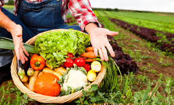
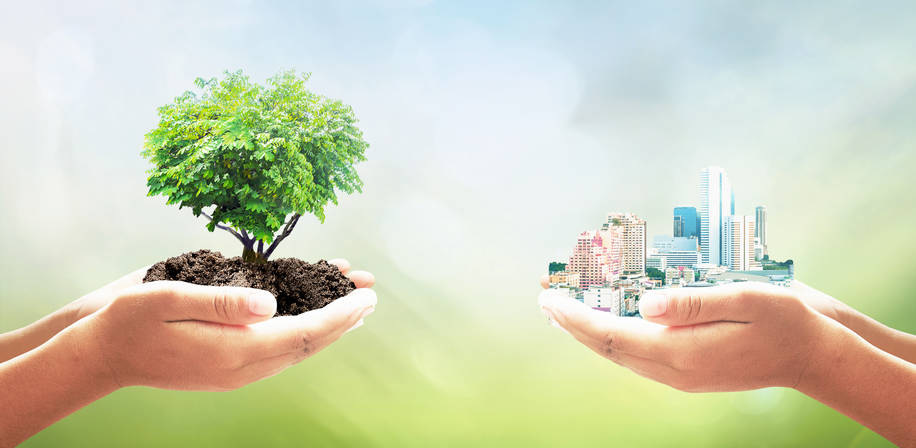
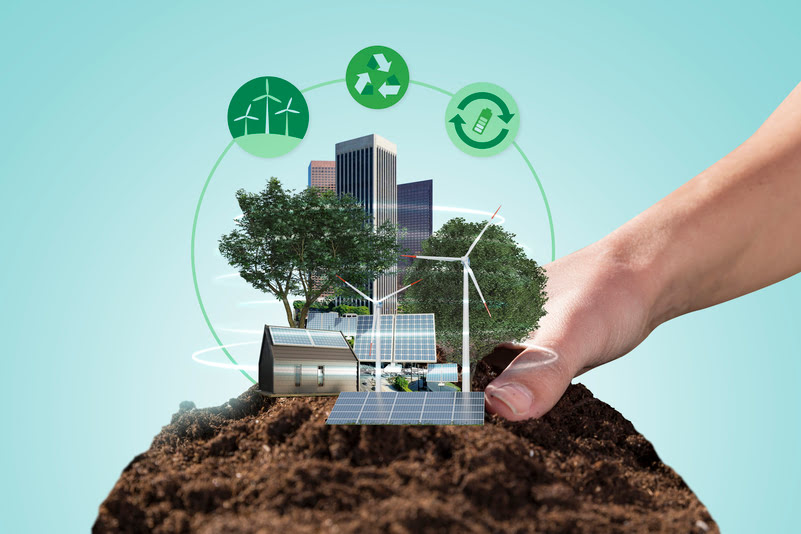

Campo exuberante ao amanhecer.

Área urbana em harmonia com a natureza.

Vida vibrante nas ruas da cidade.

Modernidade e cultura nas metrópoles.
Explore a harmonia entre o rural e o urbano.
“A natureza não faz nada em vão.” – Aristóteles
Campo exuberante ao amanhecer.
Área urbana em harmonia com a natureza.
Vida vibrante nas ruas da cidade.
Modernidade e cultura nas metrópoles.